For software built with a coding agent
See what your agent built.
Fragmentor draws a software system as blocks inside blocks, shows what happens when something sets it going, and checks that the code matches the drawing. A coding agent does the work in your project folder. Fragmentor shows you what it did.
A desktop app. Needs Node.js. Works with Claude Code, Codex and other coding agents.
The Tickets example, every block of it. Click a block to start the run there.
Architecture
The whole system, in one drawing.
Every block is drawn inside the block it is part of: functions, groups of them, and the databases, queues, services and clients they talk to. The lines mean one thing: this is part of that.
Colour by kind, and the drawing says which world each thing belongs to. Show dependencies, and arrows say which part reads, writes or calls which. Click a block for its details. Fold one to put its parts away.
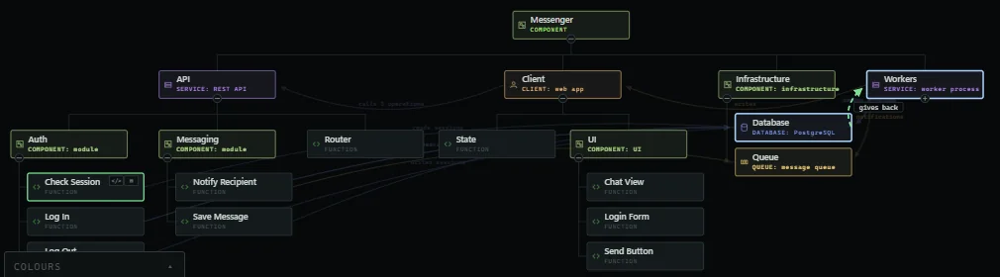
Executions
What actually happens, one step at a time.
Something sets the system going: a button, a request, a scheduled job. For each one, the agent writes down every step the run takes through the architecture. Pick one and step through it a single arrow at a time, or switch to Flow to see the whole run laid out from beginning to end.
Where the code imports its contract, press Record. Fragmentor runs the code, lights up what the run touched, and marks each written-down step as seen or not.
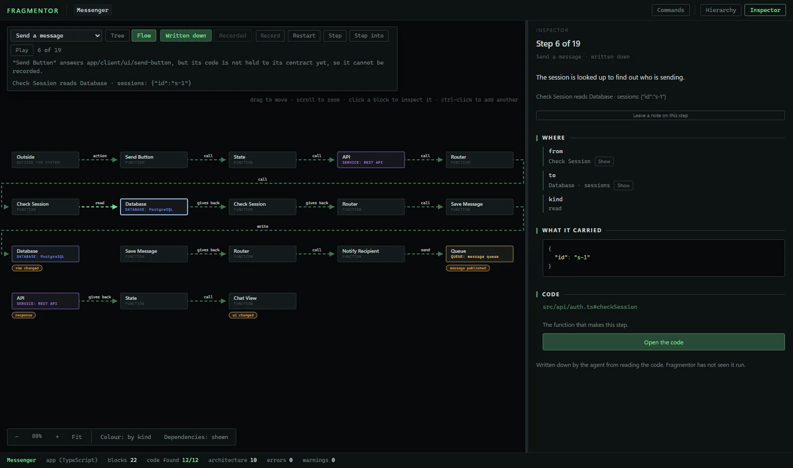
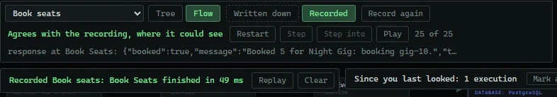
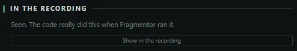
Live demo
This is not a screenshot.
Pages Fragmentor exported from its two example projects, with no code in them. Everything below works.
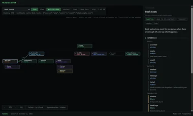
- Drag the drawing. Scroll to zoom.
- In Tickets, click Book Seats. Its contract opens on the right.
- Press Step, top left. The run goes through the system one arrow at a time.
- Press Flow to see the whole run laid out.
Verification
The code must match the drawing.
A drawing that drifts from the code is worse than none. Fragmentor checks as you work. The agent runs fragmentor check, gets the same findings as text, and keeps going until they pass.
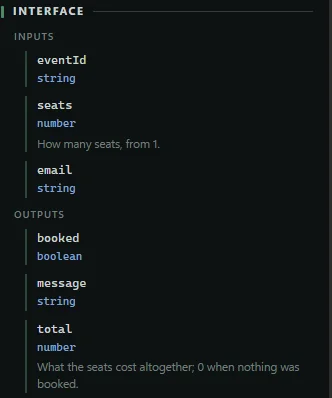
Contracts
Each function's inputs and outputs are written once. Code that imports its contract is typechecked against it, can be run from the window with values you type, and has tests. Code that does not is drawn and read, and the check says which is which.
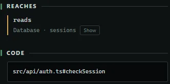
Reach
Fragmentor reads which databases, queues, services and clients your TypeScript code reaches, and warns where it crosses into one the drawing does not declare.
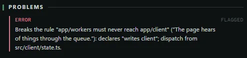
Rules
Select two blocks and add a rule: one must never reach the other, or only this one may reach it. A rule the code definitely breaks stops the agent's check. Red means something is wrong, and nothing else.
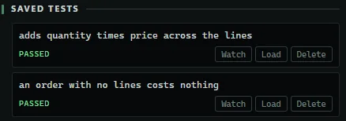
Tests
The agent writes tests for every function it builds. Open a block, type values, run it, and save the run as a test. Fragmentor runs them all.
Your agent
You and your agent, on the same drawing.
Fragmentor has no AI in it. Your coding agent, whether Claude Code, Codex or another, works in the project folder and follows the guide Fragmentor writes there. The drawing updates as the agent works.
When something is wrong, leave a note on the block. Tell the agent fragmentor notes and it reads them, does what each asks, commits, and answers on the block.
fragmentor plan a ticket office
the agent draws the whole architecture first, greyed out
fragmentor build
blocks turn solid as they are built
fragmentor check
Result: no errors. Run fragmentor test to run the tests.
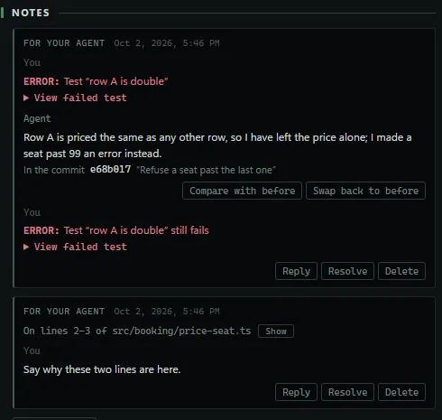
More
The rest of it.
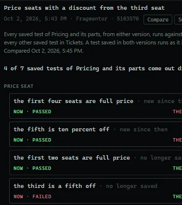
Versions
Save a version of a block when it works. Compare it with the block as it is, with the tests of both. Swap it back, and undo the swap.
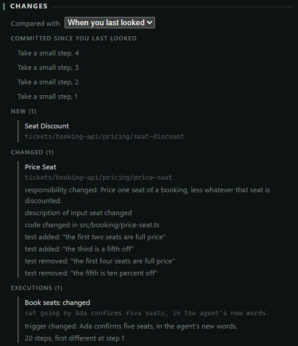
Since you last looked
A bar above the drawing says what changed while you were away: new blocks, changed code, added tests, a changed run.
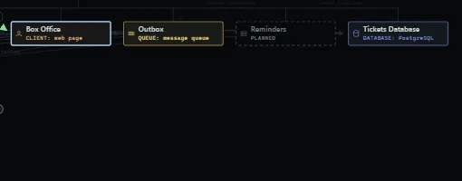
Planned, not built
Ask the agent to plan first and the whole architecture is drawn greyed out and dashed. Blocks turn solid as they are built.
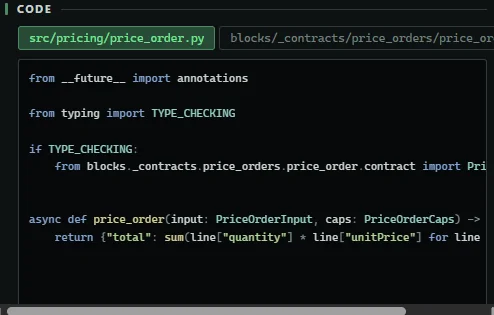
TypeScript and Python
Code in any language is drawn. TypeScript and Python are also checked, run and tested.
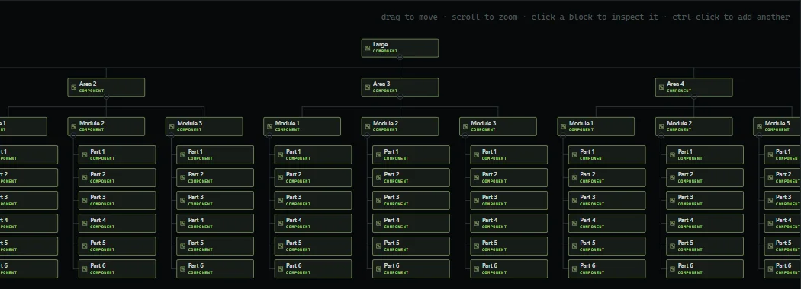
Bigger than the window
The whole system is one drawing, with no levels to move between. Drag to move, scroll to zoom, fold a block to put its parts away.
Export
File › Export saves the drawing and its executions as one read-only page that opens in any browser, with no code in it. The live demo above is one.
Download
Get Fragmentor.
Fragmentor is a desktop app. It needs Node.js and npm. A Python project also needs Python 3.11 or later.
npm install
npm link
npm run app- The download is the source, zipped, from GitHub. Unzip it and run the commands inside the folder.
npm linkis needed once. It puts thefragmentorcommand on your PATH, which is how coding agents check their work.- When the window opens, choose New project…, answer its questions, and send your coding agent the first command Fragmentor shows you.